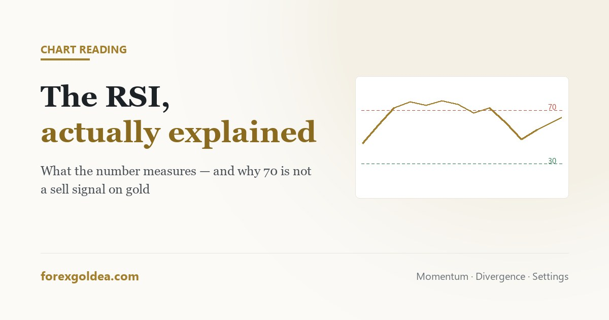

The RSI, and what it actually tells you about gold

The RSI is the first indicator almost everyone adds to a chart, and the first one almost everyone misreads. The problem is not the tool. It is that the rule people are taught — buy below 30, sell above 70 — describes behaviour gold displays less often than any other instrument on the platform.
In short the RSI measures the speed of recent price change, not value. A reading of 75 does not mean gold is expensive; it means buying has been persistent. That distinction is the whole thing. On XAU/USD, which trends hard when the dollar or rates move, the RSI can sit above 70 for weeks while price keeps rising — so treating 70 as a sell signal means selling into strength repeatedly. Use it for context and divergence, on the 4H or daily, with the standard 14-period setting. Never as a standalone entry.
What the number is actually measuring
The Relative Strength Index compares the size of recent gains to the size of recent losses over a lookback window, conventionally 14 periods, and expresses the result on a scale of 0 to 100. That is all it does.
Read that definition again, because it contains the misunderstanding. The RSI knows nothing about value, fair price, or whether gold is expensive. It knows how one-sided the last fourteen candles have been. A reading of 78 is a statement about momentum, and momentum is a description of what has just happened, not a prediction of what happens next.
The name is unhelpful here. “Relative strength” sounds like a comparison against other assets. It is not; it is a comparison of the instrument against its own recent behaviour.
The 70/30 rule, and why gold ignores it
The textbook says above 70 is overbought and below 30 is oversold, with the implication that price should turn. On a range-bound instrument, that works often enough to feel true.
Gold is not reliably range-bound. When the dollar weakens or rate expectations shift, XAU/USD makes extended directional runs, and during those runs the RSI reaches 70 early and simply stays there. Nothing is wrong with the indicator; it is faithfully reporting that buying has been persistent. What is wrong is the interpretation that persistence must end soon.
Traders who sell every reading above 70 during a gold rally do not lose because they are unlucky. They lose because they are using a range tool to fight a trend, and the drivers behind that trend — covered in what moves the gold price — do not resolve in fourteen candles.
Divergence, and its honest hit rate
The more interesting use is divergence: price makes a higher high while the RSI makes a lower high, suggesting the move is being driven by less force than the one before it.
This is a real observation and worth watching. It is also worth being honest about what it delivers. Divergence signals frequently appear well before any turn, and in strong gold trends they can appear three or four times while price continues in the original direction. A trader entering on the first divergence in a powerful move usually enters early enough to be stopped out before being right.
Used as a reason to tighten a stop or take partial profit, divergence earns its place. Used as a reversal entry on its own, it is one of the most expensive habits available on a gold chart.
Settings, and why the default is usually correct
The standard is 14 periods. Shortening it to 7 or 9 makes the line more reactive and produces far more extreme readings, most of which mean nothing. Lengthening it to 21 smooths the line and delays every signal further.
There is no hidden setting that unlocks the indicator, and searching for one is a well-trodden route to curve-fitting — tuning a parameter until it would have worked beautifully on the last six months and has no reason to work on the next six.
| Timeframe | How the RSI behaves on gold |
|---|---|
| M1–M15 | Reaches extremes constantly. Mostly reflects spread and noise rather than momentum. |
| H1 | Usable for context within a session, still frequently at extremes during active hours. |
| H4 | The most workable timeframe. Extremes are less frequent and mean more. |
| D1 | Slow, and best for judging whether the larger move is stretched. Signals are rare. |
One adjustment does help in practice: in an established uptrend, treat 40–50 as the zone where pullbacks tend to end rather than waiting for 30, which may never arrive. In a downtrend, mirror it at 50–60. This keeps the tool aligned with the trend instead of arguing with it.
Using it as context, not as a signal
The honest role of the RSI on a gold chart is as a second opinion. Decide direction from structure and the larger trend; use the RSI to judge whether the move you are looking at is fresh or already extended.
- Trend intact, RSI pulling back toward 50: the kind of pause that continuation setups form in.
- Trend intact, RSI pinned above 70 for days: strength, not a sell signal. A poor place to start a position, a fine place to hold one.
- No clear trend, RSI at 75: the only situation where the textbook reading carries real weight.
- Divergence forming: a reason to protect profit, not to reverse direction.
Combined with what the candles themselves are showing and a sensible stop placement, that is a genuinely useful tool. Used alone, on a fast timeframe, as a reason to fade a trending metal, it is an efficient way to donate money.
Reader questions
What does the RSI indicator measure?
It measures momentum: how one-sided recent price changes have been over the last 14 candles. It says nothing about value.
Is RSI above 70 a sell signal on gold?
No. On gold the RSI can stay above 70 for weeks in a trend — a high reading usually confirms strength, not a reversal.
What is the best RSI setting for gold?
The default 14 period on the 4-hour chart. Shorter settings mostly produce noise, and unusual values tend to be curve-fitted.
How reliable is RSI divergence?
It spots real momentum loss but fires early, often several times in a trend. Better for tightening stops than for reversal entries.
Should I use RSI on its own?
No. Establish direction from structure first, then use the RSI to judge whether the move is fresh or stretched.
What is the difference between RSI and stochastic?
Both are momentum oscillators, but RSI compares gains to losses while stochastic compares close to recent range. Stochastic is noisier.
Where this leaves you
The RSI is a momentum description dressed up, by decades of repetition, as a valuation signal. Once you stop asking it whether gold is expensive and start asking it whether the current move is fresh or tired, it becomes a genuinely useful second opinion — particularly on the 4-hour chart, particularly alongside structure, and particularly when you accept that a reading of 75 in a strong gold trend is information about strength rather than an invitation to fight it.
Affiliate disclosure: we earn a commission when you open and fund an account through our partner links, at no extra cost to you.